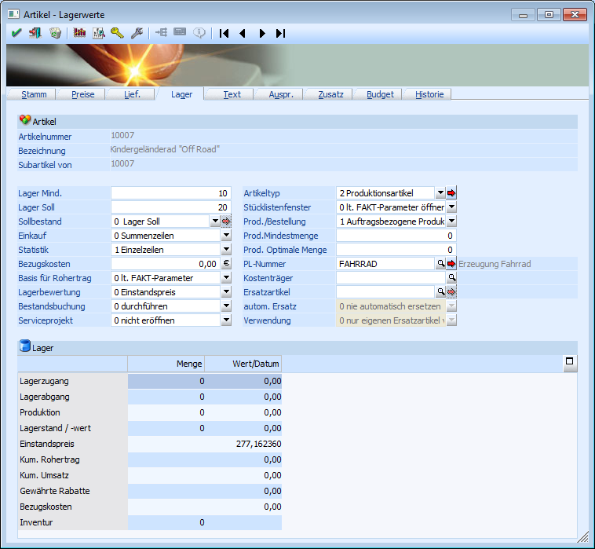
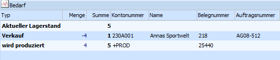
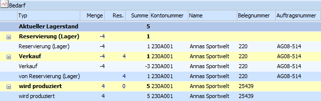
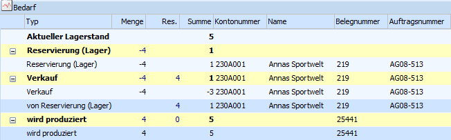
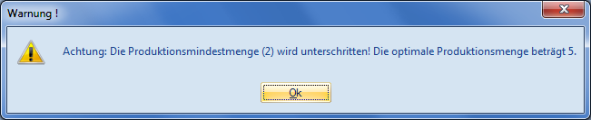
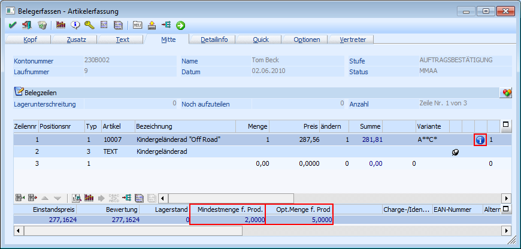

Die relevanten Einstellungen für Produktionsartikel können über
1 WinLine FAKT
1 Stammdaten
1 Artikelstamm
1 Artikel
1 Register "Lager"
bearbeitet werden.

Folgende Eingabefelder müssen bearbeitet werden bzw. sind relevant:
Ø Artikeltyp
An dieser Stelle muss der Typ "2 - Produktionsartikel" gewählt werden.
Hinweis
Wird ein Artikel in WinLine PPS (Stammdaten - Stückliste-Assistent) mit einer Stückliste verknüpft, dann erfolgt für diesen Artikel die Einstellung auf Typ 2 automatisch.
Ø Prod./Bestellung
Über die Produktionsart wird gesteuert, wie bzw. welche Dispositionszeilen bei dem Produktionsartikel gebildet werden sollen, wenn dieser z.B. in einem Kundenauftrag von WinLine FAKT erfasst wird.
Hinweis
Bei allen Produktionsarten ist es jederzeit möglich manuell Aufträge für die Produktionsartikel anzulegen.
Folgende Einstellungen sind möglich:
ü 0 - Lagerproduktion
Es wird
Lagerware produziert und der Bedarf ermittelt sich dabei über den
Einkaufsbereich von WinLine FAKT (WinLine FAKT - Einkauf - Bestellvorschlag -
Bestellvorschlag erstellen - Register "Produktionsartikel produzieren").
Im Bestellvorschlag wird pro Produktionsartikel analysiert, ob der Minimalstand unterschritten ist und auf den Sollstand aufgefüllt (dabei werden die Kundenaufträge und die laufenden Produktionsaufträge berücksichtigt). Diese Bestellvorschläge können dann in der WinLine PPS eingelesen werden (WinLine PPS - Produktion - Produktionsauftrag einlesen).
Hinweis
Aus diesem Grund müssen bei der Hinterlegung von "0 - Lagerproduktion" auch die Felder "Lager Mind." und "Lager Soll" gefüllt werden.

ü 1 - Auftragsbezogene
Produktion/Bestellung
Der Produktionsartikel wird pro Kundenauftrag erstellt.
Dadurch ist es möglich direkt aus der Belegerfassung der WinLine FAKT heraus
Produktionsaufträge in der WinLine PPS anzulegen. Geschieht dieses nicht direkt,
dann ist auch ein Einlesen dieser Produktionsaufträge über das Programm
"Produktionsauftrag einlesen" (WinLine PPS - Produktion - Produktionsauftrag
einlesen) ohne weiteres möglich.

Achtung
Damit eine auftragsbezogene Produktion/Bestellung durchgeführt werden kann, ist auch eine entsprechende Einstellung in der verwendeten Belegart (Register "Option" - Feld "Auftragsbezogene Produktion/Bestellung") notwendig (nähere Informationen siehe Kapitel "Belegartenstamm (auftragsbezogene Produktion)").
ü 2 - Bestellung mit Reservierung
Diese Produktionsart ist mit der "0 - Lagerproduktion" zu vergleichen. Auch in diesem Fall wird Lagerware produziert und der Bedarf ermittelt sich ebenfalls identisch.
Hinweis
Auch bei dieser Einstellung müssen die Felder "Lager Mind." und "Lager Soll" gefüllt werden.
Zusätzlich werden bei dieser Einstellung sogenannte Reservierungszeilen gebildet. D.h. es werden die bestellten Mengen für den Produktionsartikel fix bis zur Auslieferung reserviert und können nicht anderwärtig vergeben werden.

Achtung
Damit Reservierungszeilen gebildet werden können, muss die Reservierung auch in den FAKT-Parametern (Artikel - Allgemein - Feld "Res. Verwenden") aktiviert sein.
Ø Prod. Mindestmenge
An dieser Stelle kann bei Produktionsartikeln eine zu produzierende Mindestmenge hinterlegt werden. Wenn diese Menge in der Belegerfassung unterschritten wird, dann erscheint ein entsprechender Hinweis.
Hinweis
Die Mindestmengenüberprüfung findet auch bei der manuellen Anlage eines Produktionsauftrages statt, sowie beim Einlesen von Produktionsaufträgen.

Zusätzlich wird die Unterschreitung in Form eines Symbols in der Erfassungszeile dargestellt.

Achtung
Ob bei einer Unterschreitung die Erfassung des Produktionsartikels überhaupt zulässig ist, wird in den PPS-Parametern (WinLine Start - Parameter - Applikations-Parameter - PPS-Parameter - Parameter - Einstellung "Unterschreitung der Produktionsmindestmenge ist …") definiert werden.
Ø Prod. Optimale Menge
An dieser Stelle kann bei Produktionsartikeln eine zu produzierende Optimalmenge hinterlegt werden. Diese Menge dient zur reinen Information und hat keine weitere Auswirkung.
Ø PL-Nummer
Hier wird die Stückliste für den Produktionsartikel hinterlegt. Durch Drücken auf die Lupe bzw. die F9-Taste kann nach bereits angelegten Stücklisten gesucht werden.
Hinweis
Falls noch keine Stückliste für diesen Artikel definiert sein sollte, kann über den Button direkt in die Stücklistenaufnahme der Produktion gewechselt werden. Nachdem dort die Aufnhame beendet wurde wechselt das Programm wieder in den Artikelstamm zurück und füllt das Feld "PL-Nummer" automatisch mit der gerade aufgenommenden Stückliste.